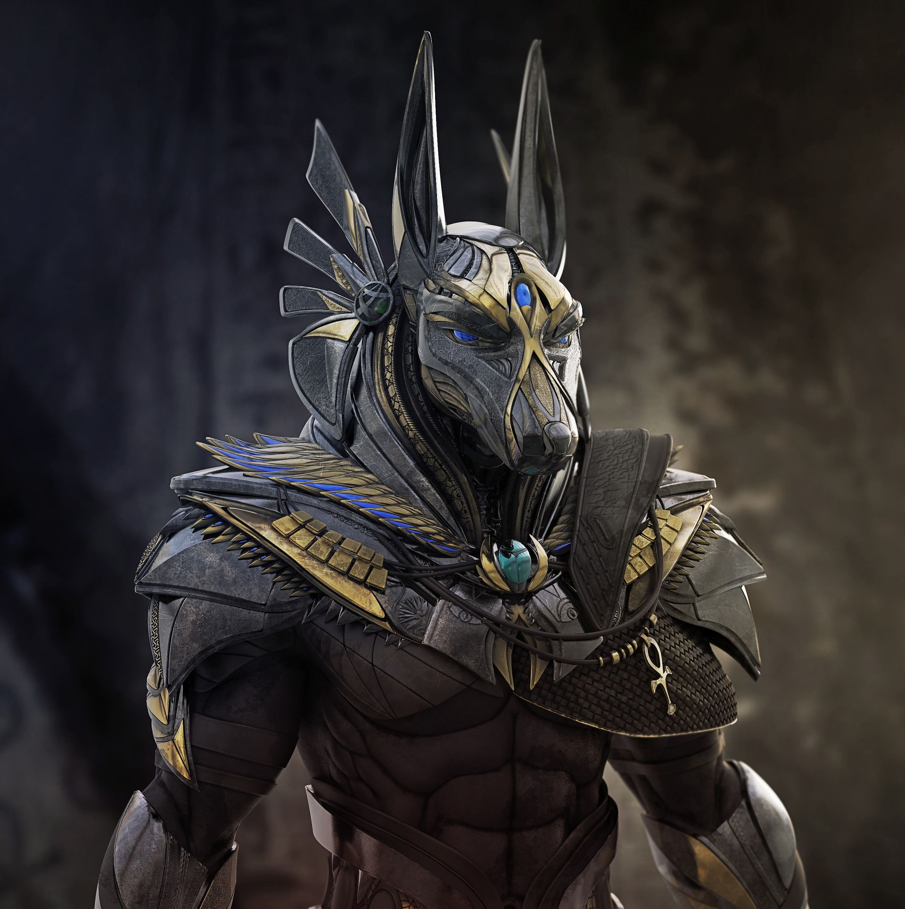
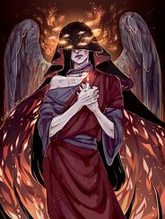

Jeoseung Saja, también conocido como "el mensajero de la muerte" o "el ejecutor celestial", es una figura de la mitología coreana que se cree que es un ser celestial encargado de llevar las almas de los difuntos al más allá. Esta figura es similar a la del ángel de la muerte en otras culturas, pero con características únicas propias de la tradición coreana.
Según la creencia popular, Jeoseung Saja aparece poco antes de la muerte de una persona para guiar su alma al otro mundo. Se dice que tiene la capacidad de ver quiénes están cerca de la muerte y aparece para llevar sus almas a la vida después de la muerte. En algunas versiones de la leyenda, Jeoseung Saja puede aparecer en forma de un anciano o una figura encapuchada, y su presencia se asocia con la sensación de frío y oscuridad.

Origen de la Leyenda
La creencia en Jeoseung Saja ha sido parte de la cultura coreana durante siglos y ha influido en las tradiciones funerarias y en la forma en que la muerte se percibe en la sociedad coreana. Aunque es una figura temida por su asociación con la muerte, también se le considera un ser benevolente que cumple un papel importante en el ciclo de la vida y la muerte.
Historias Populares
Una de las historias más conocidas sobre Jeoseung Saja es la de un anciano que, tras morir, encuentra al mensajero de la muerte esperándolo para guiar su alma al más allá. En el camino, el anciano pregunta sobre la vida después de la muerte y Jeoseung Saja le explica que cada alma recibirá lo que merece según sus acciones en vida.
Representaciones Culturales
Jeoseung Saja ha sido representado en varias formas de medios coreanos, incluyendo dramas, películas y literatura. Su representación varía desde una figura temida hasta un guía comprensivo que ayuda a las almas en su transición.
Simbolismo
En la mitología coreana, Jeoseung Saja simboliza la inevitabilidad de la muerte y el viaje de las almas al más allá. Sirve como recordatorio de que la vida es efímera y que nuestras acciones en vida tienen consecuencias en la otra vida.
Variantes de la Muerte en Otras Culturas
- México: La Santa Muerte y La Catrina, figuras icónicas del Día de los Muertos.
- Japón: Shinigami, espíritus de la muerte que guían a las almas al más allá.
- China: Yanluo Wang (Yama), el rey del inframundo y juez de los muertos.
- Egipto Antiguo: Anubis, dios de los muertos y de la momificación.
- Islam: Azrael, el ángel de la muerte.
La Catrina

Yanluo Wang

Shinigami
Anubis
Azrael